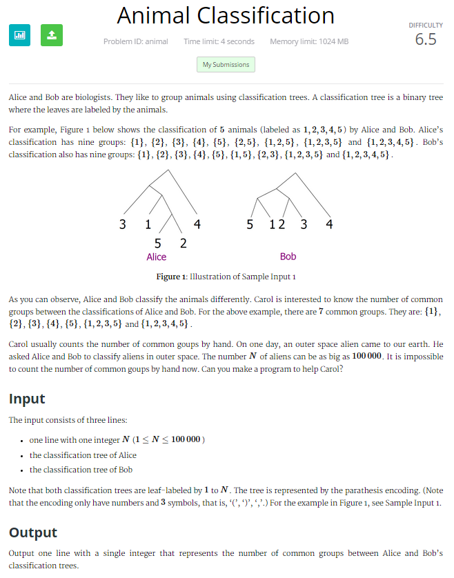

Peter's ICPC Solution Blog
Recently, I ran into this problem during the Kattis ICPC North American Regionals 2015 Warm-up 2 contest (). After grabbing most of the low hanging fruit (Problem A, Problem B, and Problem I were all very reasonable), as well as applying dijkstra's SSID algorithm to solve Problem C, I started working on Animal Classification, problem J. At this point in the contest, it looked like the most doable remaining problem, except for perhaps question H.
Here’s the question:
First, we notice that there can be up to 100,000 elements in the classification. Because we only have 4 seconds, this eliminates any algorithm that has O(N^2) time or worse, as 10^10 is too big to finish running in 10 seconds. The memory limit is very large, at 1024 megabytes, so we can pretty much store almost as many bytes (10^9 bytes) as we can compute within the time limit. As a result, we don’t need to worry about memory unless we do something that would store more than about 1000 copies of the maximum classification tree.
Our end goal is to check the number of common classification groups. The most basic approach would be to first make a list of all of the groups for each tree, and compare the groups. Unfortunately, if we made a complete list of all of the groups, that would be O(N^2) integers being stored. Looking at Figure 1, we have 9 groups, {1}, {2}, {3}, {4}, {5}, {2,5}, {1,2,5}, {1,2,3,5} and {1,2,3,4,5}. This has a total of 19 integers being stored. This is no good. Even if we have only O(N) groups total (we’ll show this later), each group has N elements, giving us O(N^2). We can’t even store all of the possible groups in a reasonable amount of time. And even if we did… How could we compare them all? This approach looks bleak.
But wait! Hold on! If each group is composed of two other groups, except for groups which contain a single element, we can define a group by simply having pointers/references to two other groups, or a single element if those are non-existent.
In this example, instead of storing (1, 2, 3, 4, 5), we could just say subtree 1 (3 1 5 2) and 4. We don’t actually have to store 3 1 5 2, because it already is being stored. We just need a way to access it, and hence the reference.
Instead of all of this bother, the clever coder can see that the group only contains elements that are next to each other. If we can just store all of the elements in an array, we could simply store a list of two-ples, a start and an end, indicating where a list starts and stops. Not bad! Using this method, we have O(N) storage for storing our array of integers, and O(2M) = O(M) for storing our groups. But wait! What if there are N^2 groups? Fortunately, there are just 2*N-1 groups at maximum. We know this because the number of groups is the total number of leaf nodes and inner nodes, and the number of inner nodes in a binary tree is the number of edge nodes – 1. Now, we can at least store both our trees, and in O(4N) ~ O(N) time. More on this later.
Next, we need a way to compare two groups quickly. If a group was something we could easily put in a HashMap, and two groups would hash to the same thing, we could do an O(1) lookup for each group! This would give us O(N) time, which would be superb. Unfortunately, anything we do to an entire group takes O(N) time, which would give us O(N^2) time. How can we use a group as a HashTable key, especially when a group can contain a massive amount of subgroups? We need some algorithm that is communitive (meaning ((1, 2), (3, 4)) is equal to ((4, 2), (1, 3)), and fast (O(1)) time.
How is this even possible? We can’t even read our list once in O(1) time! This means that we must use the hashes of the subgroups. This is a problem, since two different subgroups can combine to create one group that is the same. We have to do a dynamic programming problem, meaning archive and use subanswers. The obvious answer is similar to the stereotypical interview question, where one number is removed from a list, and you have to find which one it is by adding them up. We can do the same thing! The only problem with this, is that while 1 + 2 + 3 + 4 = 1 + 4 + 2 + 3, it means that 1 + 4 = 2 + 3. That’s no good; a false positive will give us an extra collision, and a wrong answer. I decided to go ahead and use the following operation, which I’m hoping is less likely to collide, but will have the same benefits:
Hash(n) = n^2 + n^3 + n^5 + n^7 + n^11 + n^13. This is addition, and addition is communative; and hopefully we can spread things out enough that we don’t have any collisions in nearly all cases. Since this is an ICPC problem and not a codeforces/topcoder problem, we don’t need to worry about someone doing some mathematical magic and finding a collision and hacking/challenging our solution. Now that we have this, hashing the group (n, m) is simply hash(n) + hash(m) = n^2 + n^3 + n^5 + n^7 + n^11 + n^13 + m^2 + m^3 + m^5 + m^7 + m^11 + m^13, which will commute nicely with everything we need. If we have hash(n) and hash(m) saved, all is good!
Calculating this is roughly O(1); All we have to do is add two numbers for all the groups. If we are hashing an individual number, we have to do a bit of math, but it should be O(1) (a big one) as well. This is the largest part of our solution. If it takes 13 operations to do m^13, we have just used about O(50N) operations. Ouch. Hopefully we are still in the clear for 4 seconds. Lastly, we just have to iterate through our hashmap/hashset of the first tree’s groups, and then compare it against the second hashmap. Each hit we get, increment the counter. All of this is O(1).
All in all, this wasn’t THAT bad to think up. It’s an entirely different problem implementing this however… and during a timed contest? Ouch. I guess there was a reason that only 4 people solved it out of the hundreds of people participating. Unfortunately, I didn’t finish coding this question in time, and it took me an additional 30 minutes coding the next day to finish it up.
Now that we have a general idea of what to do, we have to do it. Unfortunately, things get started pretty badly. We have a string of 100,000 numbers, 199,998 parenthesis, and 99,999 commas as pocket change. We need to parse all of this, and parse it fast. No messing around; remember, a single O(n^2) hit will destroy us. We need to be extremely careful with any structures we use; if we try to remove items off the front of an ArrayList that is 100,000 long… you might as well just type while(true){} and submit (Note: arrayList.remove() can be O(N) if it removes one of the first elements).
Here is my input and parsing code. Our ACM team coach Professor Back has told us to be careful with Scanner, and to use BufferedReader and StringTokenizer whenever possible. Above all, we can’t use String.split no matter how nice it looks, because the regular expression engine in java is very very slow.
To make matters worse, Strings are immutable in java. This means that each time a string is changed, it has to recreate the string from scratch. As a result, I decide to parse in the string, and switch it into a char[]. This will let us do lots of things to the string without taking O(N) hits left and right after changing a single number. We do use the Scanner class, but only to use the nextInt method(not shown below). For all the other times we use a custom Scanner2 class that actually uses BufferedReader.
Scanner2 input = new Scanner2();
int N = input.nextInt();
String AliceString = input.readNextLine();
String BobString = input.readNextLine();
char[] Alice = AliceString.toCharArray();
char[] Alice2 = AliceString.toCharArray();
char[] Bob = BobString.toCharArray();
char[] Bob2 = BobString.toCharArray();
ArrayList Alices = new ArrayList();
ArrayList Bobs = new ArrayList();
int[] AlicesNumbers = new int[N];
int[] BobsNumbers = new int[N];
int countAlice = 0;
ArrayList fakeStack = new ArrayList();
int number = 0;
//First, we split up and index all of the possible groups.
for (int a = 0; a < Alice.length; a++) {
if (Alice[a] == '(') {
fakeStack.add(number);
}
if (Alice[a] == ')') {
Alices.add(new Point(fakeStack.get(fakeStack.size() - 1),
number));
fakeStack.remove(fakeStack.size() - 1);
//Warning: This seems like O(n) squared. Fortunately, we are just removing the last element so it's ok.
countAlice++;
}
if (Alice[a] == ',') {
number++;
}
}
number = 0;
//First, we split up and index all of the possible groups except for single groups.
for (int a = 0; a < Bob.length; a++) {
if (Bob[a] == '(') {
fakeStack.add(number);
}
if (Bob[a] == ')') {
Bobs.add(new Point(fakeStack.get(fakeStack.size() - 1), number));
fakeStack.remove(fakeStack.size() - 1);
}
if (Bob[a] == ',') {
number++;
}
}
//Now, we remove all non-space delimiters so we can use scanner on it
for (int a = 0; a < Alice2.length; a++) {
if (Alice2[a] == '(' || Alice2[a] == ')' || Alice2[a] == ',') {
Alice2[a] = ' ';
}
}
for (int a = 0; a < Bob2.length; a++) {
if (Bob2[a] == '(' || Bob2[a] == ')' || Bob2[a] == ',') {
Bob2[a] = ' ';
}
}
Scanner AliceScan = new Scanner(new String(Alice2));
Scanner BobScan = new Scanner(new String(Bob2)); Complicating things is the maximum stack size. If we have a recursive algorithm that ends up being 10^5 deep, we might overflow. It probably is OK, but perhaps not. Especially with big recursions and lots of method parameters. As a result, we want to minimize the amount of recursion.
Before we go headlong into computing groups, we want to do things in the best possible order. At this point we can notice that if we go in reverse order and compute whenever we see an opening parenthesis, we never have to examine a group with subgroups we haven’t already examined.
Example: ((((1), (2)), ((3), (4))), (5))Collections.sort(Alices, new Comparator() {
public int compare(Point o1, Point o2) {
if (Double.compare(o1.getX(), o2.getX()) == 0) {
return -1 * Double.compare(o1.getY(), o2.getY());
}
return Double.compare(o1.getX(), o2.getX());
}
}); This is the method to add the evaluation of groups to the HashMap
private static void addEvaluationsBob(
HashMap bobsEvals, ArrayList bobs,
int[] bobsNumbers) {
for(int a = bobs.size()-1; a >= 0; a--){
if(storageBob.containsKey(bobs.get(a))){//if we already have it computed, stick it in. This happens for the groups of one element.
bobsEvals.put(storageBob.get(bobs.get(a)), 0);
}
else{
//if not, simply look up the answers of the sub items. We've already computed these.
//Because of the way that our sort goes, the sub-items are always computed before the items.
int b = Collections.binarySearch(bobs, new Point((int) bobs.get(a+1).getY(), -1), new Comparator() {
public int compare(Point o1, Point o2) {
if(Double.compare(o1.getX(), o2.getX()) == 0){
return -1 * Double.compare(o1.getY(), o2.getY());
}
return Double.compare(o1.getX(), o2.getX());}} //This binarySearch is to find where the 2nd subgroup starts and the first subgroup ends.
);
try{ //this was there for debugging earlier; we got rid of it since.
storageBob.put(bobs.get(a), storageBob.get(bobs.get(a+1)) + storageBob.get(bobs.get(-1 * b -1)));
bobsEvals.put(storageBob.get(bobs.get(a+1)) + storageBob.get(bobs.get(-1 * b -1)), 0);
}
catch(Exception e){
}
}
}
}
Finally, we simply have to compare our two hash maps and check and see what we have in common.
int count2 = 0;
for (Entry entryV : AlicesEvals.entrySet()) {
Long v = entryV.getKey();
if (BobsEvals.containsKey(v)) {
count2++;
}
}
System.out.println(count2); Not bad. Here was the final code for my solution. It isn't elegant, but it gets the job done in 3.84 seconds. Total time: 3-4 hours.
import java.awt.Point;
import java.io.BufferedReader;
import java.io.IOException;
import java.io.InputStreamReader;
import java.io.Reader;
import java.util.ArrayList;
import java.util.Arrays;
import java.util.Collections;
import java.util.Comparator;
import java.util.HashMap;
import java.util.Scanner;
import java.util.StringTokenizer;
import java.util.Map.Entry;
public class AnimalClassification {
static ArrayList numbers;
static HashMap storageAlice;
static HashMap storageBob;
public static void main(String[] args) {
numbers = new ArrayList();
numbers.add(2);
numbers.add(3);
numbers.add(5);
numbers.add(7);
numbers.add(11);
numbers.add(13);
numbers.add(17);
numbers.add(19);
Scanner2 input = new Scanner2();
int N = input.nextInt();
String AliceString = input.readNextLine();
String BobString = input.readNextLine();
char[] Alice = AliceString.toCharArray();
char[] Alice2 = AliceString.toCharArray();
char[] Bob = BobString.toCharArray();
char[] Bob2 = BobString.toCharArray();
ArrayList Alices = new ArrayList();
ArrayList Bobs = new ArrayList();
int[] AlicesNumbers = new int[N];
int[] BobsNumbers = new int[N];
int countAlice = 0;
ArrayList fakeStack = new ArrayList();
int number = 0;
//First, we split up and index all of the possible groups.
for (int a = 0; a < Alice.length; a++) {
if (Alice[a] == '(') {
fakeStack.add(number);
}
if (Alice[a] == ')') {
Alices.add(new Point(fakeStack.get(fakeStack.size() - 1),
number));
fakeStack.remove(fakeStack.size() - 1);
//Warning: This seems like O(n) squared. Fortunately, we are just removing the last element so it's ok.
countAlice++;
}
if (Alice[a] == ',') {
number++;
}
}
number = 0;
//First, we split up and index all of the possible groups except for single groups.
for (int a = 0; a < Bob.length; a++) {
if (Bob[a] == '(') {
fakeStack.add(number);
}
if (Bob[a] == ')') {
Bobs.add(new Point(fakeStack.get(fakeStack.size() - 1), number));
fakeStack.remove(fakeStack.size() - 1);
}
if (Bob[a] == ',') {
number++;
}
}
//Now, we remove all non-space delimiters so we can use scanner on it
for (int a = 0; a < Alice2.length; a++) {
if (Alice2[a] == '(' || Alice2[a] == ')' || Alice2[a] == ',') {
Alice2[a] = ' ';
}
}
for (int a = 0; a < Bob2.length; a++) {
if (Bob2[a] == '(' || Bob2[a] == ')' || Bob2[a] == ',') {
Bob2[a] = ' ';
}
}
Scanner AliceScan = new Scanner(new String(Alice2));
Scanner BobScan = new Scanner(new String(Bob2));
HashMap AlicesEvals = new HashMap();
HashMap BobsEvals = new HashMap();
number = 0;
//Use scanners to split up and generate numbers.
storageAlice = new HashMap();
storageBob = new HashMap();
while (AliceScan.hasNextInt()) {
int temp = AliceScan.nextInt();
Alices.add(new Point(number, number));
// System.out.println(temp + " is the temp");
AlicesNumbers[number] = temp;
ArrayList tempList = new ArrayList();
tempList.add(temp);
Long temp2 = hashItIhopethisworks((Long) (long) temp);
storageAlice.put(new Point(number, number), temp2);
AlicesEvals.put(temp2, 0);
number++;
}
number = 0;
while (BobScan.hasNextInt()) {
int temp = BobScan.nextInt();
Bobs.add(new Point(number, number));
BobsNumbers[number] = temp;
ArrayList tempList = new ArrayList();
tempList.add(temp);
Long temp2 = hashItIhopethisworks((Long) (long) temp);
storageBob.put(new Point(number, number), temp2);
BobsEvals.put(temp2, 0);
number++;
}
//N log N sort of all 2*N groups.
Collections.sort(Bobs, new Comparator() {
public int compare(Point o1, Point o2) {
if (Double.compare(o1.getX(), o2.getX()) == 0) {
return -1 * Double.compare(o1.getY(), o2.getY());
}
return Double.compare(o1.getX(), o2.getX());
}
});
Collections.sort(Alices, new Comparator() {
public int compare(Point o1, Point o2) {
if (Double.compare(o1.getX(), o2.getX()) == 0) {
return -1 * Double.compare(o1.getY(), o2.getY());
}
return Double.compare(o1.getX(), o2.getX());
}
});
//Now we add them all to a hashmap
addEvaluationsAlice(AlicesEvals, Alices, AlicesNumbers);
addEvaluationsBob(BobsEvals, Bobs, BobsNumbers);
//O(N) elements in the first hashmap, times O(1) lookup in the other hashmap.
int count2 = 0;
for (Entry entryV : AlicesEvals.entrySet()) {
Long v = entryV.getKey();
if (BobsEvals.containsKey(v)) {
count2++;
}
}
System.out.println(count2);
}
//see addEvaluationsAlice
private static void addEvaluationsBob(
HashMap bobsEvals, ArrayList bobs,
int[] bobsNumbers) {
for(int a = bobs.size()-1; a >= 0; a--){
if(storageBob.containsKey(bobs.get(a))){
bobsEvals.put(storageBob.get(bobs.get(a)), 0); //if we already have it computed, stick it in
}
else{
//if not, simply look up the answers of the sub items.
//Because of the way that our sort goes, the sub-items are always computed before the items.
int b = Collections.binarySearch(bobs, new Point((int) bobs.get(a+1).getY(), -1), new Comparator() {
public int compare(Point o1, Point o2) {
if(Double.compare(o1.getX(), o2.getX()) == 0){
return -1 * Double.compare(o1.getY(), o2.getY());
}
return Double.compare(o1.getX(), o2.getX());}}
);
try{ //this was there for debugging earlier; we got rid of it since.
storageBob.put(bobs.get(a), storageBob.get(bobs.get(a+1)) + storageBob.get(bobs.get(-1 * b -1)));
bobsEvals.put(storageBob.get(bobs.get(a+1)) + storageBob.get(bobs.get(-1 * b -1)), 0);
}
catch(Exception e){
}
}
}
}
//same as bob but for a different static variable.
private static void addEvaluationsAlice(
HashMap alicesEvals, ArrayList alices,
int[] alicesNumbers) {
for(int a = alices.size()-1; a >= 0; a--){
if(storageAlice.containsKey(alices.get(a))){
//System.out.println(alices.get(a));
alicesEvals.put(storageAlice.get(alices.get(a)), 0);
}
else{
int b = Collections.binarySearch(alices, new Point((int) alices.get(a+1).getY(), -1), new Comparator() {
public int compare(Point o1, Point o2) {
if(Double.compare(o1.getX(), o2.getX()) == 0){
return -1 * Double.compare(o1.getY(), o2.getY());
}
return Double.compare(o1.getX(), o2.getX());}}
);
//this binary search gets us the spot we need in the search. Essentially, it's in order by X's, but in backwards order by ties.
//This is very nice because it means that
//Lets say 1:6 = 1:4 + 5:6
//The order of our list would be (1:6 (1:4 (1:2 2:2) (3:4 4:4)) (5:6 (5:5 6:6))) (parentesis do not exist just there for mental grouping.
//If we look at 1:6, we need to sum 1:4 and 5:6 to make our solution fast and O(N).
//1:4 will always be the next one, but we have to binary search for where 5:6 is. because of the way we sorted, it'll always be the first one that starts with 5.
try{
storageAlice.put(alices.get(a), storageAlice.get(alices.get(a+1)) + storageAlice.get(alices.get(-1 * b -1)));
alicesEvals.put(storageAlice.get(alices.get(a+1)) + storageAlice.get(alices.get(-1 * b -1)), 0);
}
catch(Exception e){
}
}
}
}
//The idea behind this is that hash(1) + (hash(2) + hash(3)) = hash(2) + (hash(3) + hash(1)).
//Even if we have (1, (2, 3)) and (2, (3, 1)), the groups with all 3 are the same. Therefore, we need an associative hash.
//the thing we don't want is for hash(x) + hash(y) = hash(z), or hash(x) + hash(y) + hash(z) = hash(a) + hash(b) etc.
//those would cause us to get the wrong answer. Hopefully this spreads things out enough that it does the job.
//Pretty much any hash algorithm could work for this, as long as it gives results that were not likely to have collisions.
//Also, it has to be pretty fast; We have to finish in 4 seconds giving us around ~2 billion calculations.
//For a large test case of 100,000, we have several O(NlogN) sorts, tons of O(N) copies, plenty of O(N) traversals through the hashmaps
//So this must be quick enough, as it is O(N*M), where M is how long it takes to hash it and N is the number of elements.
//It turns out that this is just barely fast enough.
//If this was codeforces or topcoder, this may be hackable if you could find a case where hash(x) + hash(y) + hash(z) = hash(a) + hash(b)
private static Long hashItIhopethisworks(Long temp) {
long output = 0;
for (Integer a : numbers) {
output = output + (long) Math.pow(temp.longValue(), a);
}
// System.out.println(output);
return output;
}
//I don't actually use this, but it illustrates the concept a bit.
private static Long hashItIhopethisworks(Long temp, Long temp2) {
return hashItIhopethisworks(temp) + hashItIhopethisworks(temp2);
}
//speedy scanner class, thanks objective-H (I borrowed it from your codeforces solution)
public static class Scanner2 {
BufferedReader br;
StringTokenizer st;
public Scanner2(Reader in) {
br = new BufferedReader(in);
}
public Scanner2() {
this(new InputStreamReader(System.in));
}
String next() {
while (st == null || !st.hasMoreElements()) {
try {
st = new StringTokenizer(br.readLine());
} catch (IOException e) {
e.printStackTrace();
}
}
return st.nextToken();
}
int nextInt() {
return Integer.parseInt(next());
}
long nextLong() {
return Long.parseLong(next());
}
double nextDouble() {
return Double.parseDouble(next());
}
String readNextLine() {
String str = "";
try {
str = br.readLine();
} catch (IOException e) {
e.printStackTrace();
}
return str;
}
}
}
}